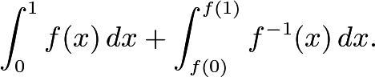

Octavius Otter is a sea otter. Sea otters have were extensively hunted for their fur for hundreds of years, bringing the species to brink of extinction, until sea otter conservation efforts saved them. However, Max Mudpuppy has launched an anti-sea otter propaganda campaign! This campaign has led to a public outcry against sea otters, threatening the conservation effort as politicians remove sea otter hunting restrictions to quell the fears of their constituents. Octavius does not want to die... can you help?
Max Mudpuppy handed Octavius Otter two slips of paper. Octavius Otter, never having handled paper before, accidentally got the first slip of paper so soggy that it became impossible to read! (Luckily, he learned from his mistake and dried his hands before handling the other sheet.) Octavius recalls that the first piece of paper was some formula for a function f(x), along with a sketch of a curve undernearth the formula. While he does not entirely remember the formula, he does remember that it was a cubic equation with no constant term and with positive coefficients on the x3, x2, and x terms. The second sheet of paper reads:
As you can see from the graph of f, it does not have a unique inverse function. However, if we restrict the domain of f to [0, 1], then f is strictly increasing and so does have a unique inverse; for instance, f(x)= 6 has multiple solutions over all of R, but the only solution in the interval [0, 1] to f(x) = 6 is x = 1. Compute

Answer: